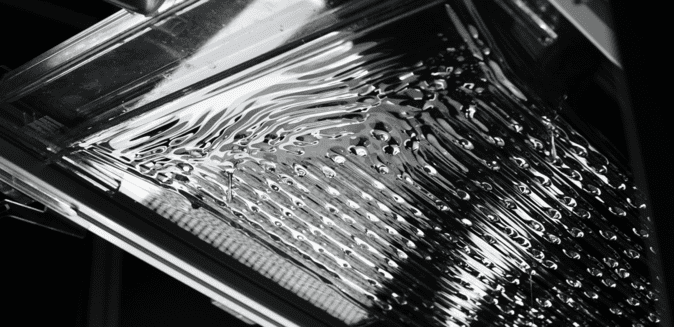
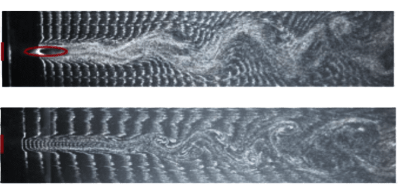
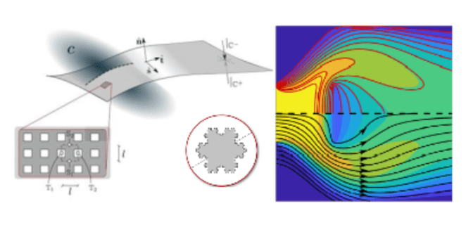
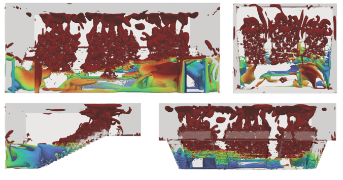
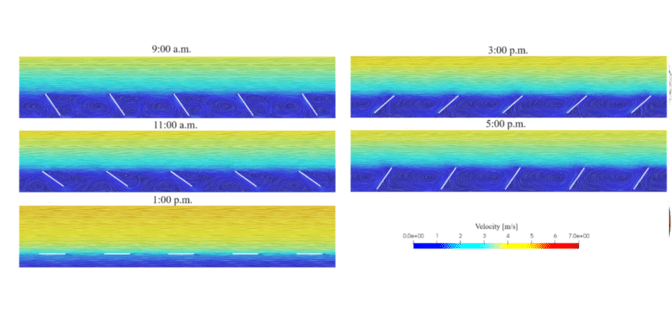
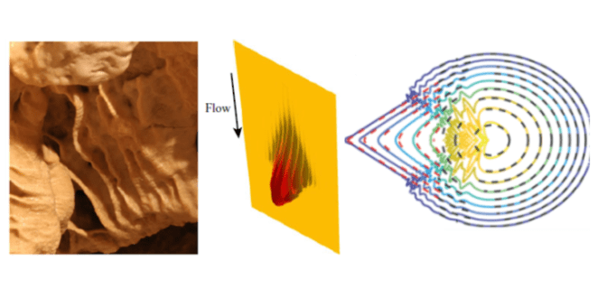

Wall shear stress manifolds in bio-fluid mechanics

Pattern formation in stratified flow within indoor environments

Atmospheric flow around and through arrays of photovoltaic panels

Soft Hydraulics

Spatiotemporal analysis of complex environmental flows